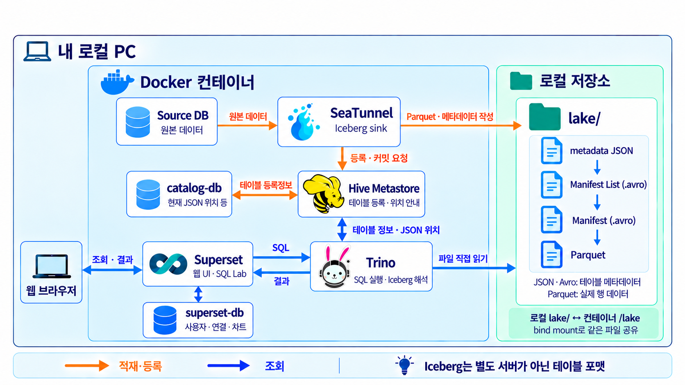
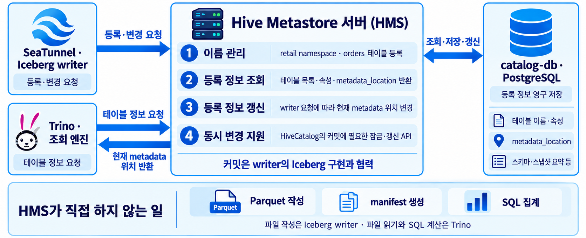
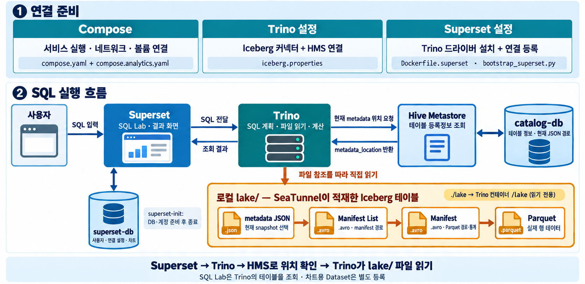
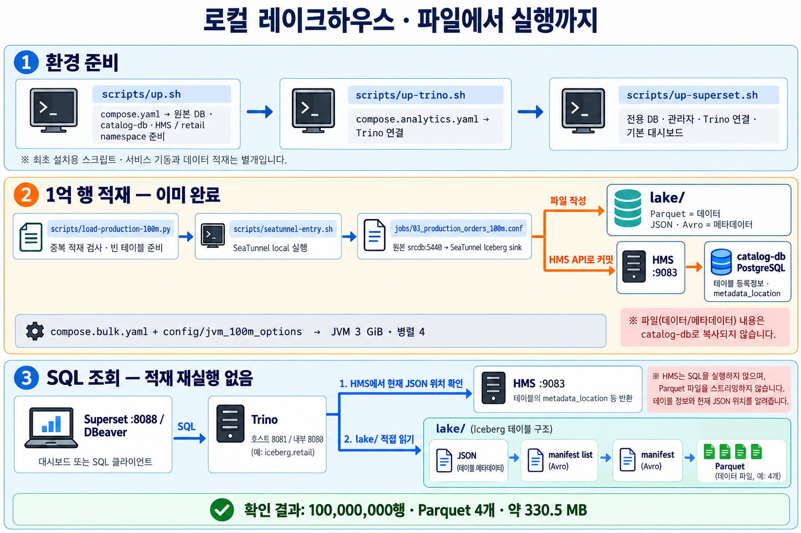

로컬 데이터 레이크하우스
환경 구축하기
SeaTunnel · Apache Iceberg · Hive Metastore · Trino · Superset
웨어하우스·레이크와 무엇이 다른가 · 네 가지 역할
Mac 한 대에 — 원본 DB에서 Iceberg 저장까지
각자 하는 일과 하지 않는 일 · 카탈로그의 자리
JSON · Avro · Parquet를 직접 열어본다
조회 계층을 붙이고 실제로 읽는다
전체 지도 · 확인한 것 · 남은 것
| 항목 | 데이터 웨어하우스 | 데이터 레이크 | 레이크하우스 |
|---|---|---|---|
| 저장 방식 | 데이터베이스 안에 넣어 관리한다 | 값싼 저장소에 파일 그대로 쌓는다 | 값싼 저장소에 파일 그대로 쌓는다 |
| 스키마 · 이력 | 있다 | 없다 | 있다 |
| 쓰는 중에 읽으면 | 이전 상태가 보인다 (안전) | 쓰다 만 파일이 보인다 | 이전 상태가 보인다 (안전) |
| 조회 도구 | 그 시스템 전용 | 여러 도구로 읽을 수 있다 | 여러 도구로 읽을 수 있다 |
| 주로 겪는 문제 | 비용이 크고, 데이터를 꺼내려면 복사해야 한다 | 뭐가 뭔지 모르게 된다 | 구성요소를 직접 조립해야 한다 |
1적재
원본 DB의 행을 읽어 레이크에 쓴다. 파일 작성과 테이블 커밋을 함께 처리한다.
 SeaTunnel 2.3.13
SeaTunnel 2.3.13
2테이블 포맷
쌓인 파일 중 어떤 것이 현재 테이블인지 정의한다. 스키마와 이력도 여기 있다.
Iceberg 1.6.13카탈로그
테이블 이름 → 현재 메타데이터 파일 위치를 관리한다. 조회의 시작점이다.
 Hive Metastore 4.0.1
Hive Metastore 4.0.1
4조회
SQL을 실행할 엔진과, 사람이 보는 화면. 둘은 다른 역할이다.
 Trino 483 + Superset 6.0
Trino 483 + Superset 6.0
Mac 한 대에 — 원본 DB에서 Iceberg 저장까지


source { Jdbc { url = "jdbc:postgresql://host.docker.internal:5440/srcdb?readOnly=true" query = "select order_id, factory_id, product_name, quantity, order_date, status from public.production_orders_100m" fetch_size = 5000 partition_column = "order_id" partition_num = 4 } } sink { Iceberg { iceberg.catalog.config = { type = "hive" uri = "thrift://hms:9083" warehouse = "file:///lake/warehouse" } namespace = "retail" table = "production_orders_100m" iceberg.table.write-props = { write.format.default = "parquet" write.parquet.compression-codec = "zstd" } data_save_mode = "APPEND_DATA" } }
sink { Iceberg { catalog_name = "local_hive" iceberg.catalog.config = { type = "hive" uri = "thrift://hms:9083" warehouse = "file:///lake/warehouse" } namespace = "retail" table = "production_orders_100m" iceberg.table.write-props = { write.format.default = "parquet" write.parquet.compression-codec = "zstd" write.target-file-size-bytes = 134217728 write.parquet.row-group-size-bytes = 16777216 } schema_save_mode = "CREATE_SCHEMA_WHEN_NOT_EXIST" data_save_mode = "APPEND_DATA" } }
| 파라미터 | 하는 일 |
|---|---|
| type | 카탈로그 구현 선택 — JDBC · REST · Glue로 교체 가능한 자리 |
| uri | 카탈로그 주소 — Hive Metastore Thrift 지점. 테이블 등록·커밋 요청의 수신처 |
| warehouse | 저장소 주소 — Parquet · JSON · Avro의 실제 기록 경로 (기본값) |
| catalog_name | job 안에서만 쓰는 별명 — HMS의 DB 이름과 무관 |
| namespace table | 테이블 전체 이름 → retail.production_orders_100m |
| write-props | 테이블 속성으로 기록되는 쓰기 규약 — 포맷 · 압축 · 파일 크기 |
| schema_save_mode | 테이블 부재 시 자동 생성 — 원천 DB에서 읽어온 컬럼·타입 기반 |
| data_save_mode | 기존 데이터 뒤에 추가 — 재실행 시 행 중복 |
각자 하는 일과 하지 않는 일 · 카탈로그의 자리
| 구성요소 | 하는 일 | 하지 않는 일 |
|---|---|---|
| SeaTunnel |
원본 행 읽기 → Parquet 쓰기 → 카탈로그 커밋 | 적재할 때만 실행 후 종료 — 조회 경로에는 등장하지 않음 |
| Iceberg | 현재 테이블의 정의 — 스키마 · 스냅샷 · 파일 목록 | 독립 실행 프로세스가 아님 — 데이터·메타데이터 파일(Parquet · Avro · JSON)과 그것을 읽고 쓰는 라이브러리로 존재 |
| Hive Metastore |
테이블 이름 → 현재 metadata JSON 위치 관리 | SQL 실행 · Parquet 읽기 · 폴더 스캔 자동 등록 — 전부 없음 |
| Trino | SQL 수신 · 실행 계획 수립 · Parquet 직접 읽기와 계산 | 데이터 보관 없음 — 저장소가 아닌 계산 전용 엔진 |
| Superset |
웹 화면 — Trino로 SQL 전달, 결과를 표 · 차트로 렌더링 | 파일 직접 접근 없음 · 조회 데이터 복사본 없음 |

metadata_location file:/lake/.../00004-9489b5e8-….metadata.json
previous_metadata_location file:/lake/.../00003-a9e2206d-….metadata.json
table_type ICEBERG
uuid 2aaada46-1a99-4e86-a806-26b28ba35f11
current-snapshot-id 3279400440120366835
current-snapshot-summary {"added-records":"25000000", …}
snapshot-count 4
current-schema {"fields":[{"id":1,"name":"order_id", …}]}
numRows 100000000
numFiles 4
totalSize 330496199
write.parquet.compression-codec zstd
write.target-file-size-bytes 134217728
write.parquet.row-group-size-bytes 16777216
1HMS에게 필요한 DB 테이블 조회 결과
metadata_location이 현재 테이블을 가리킨다. 커밋은 이 값을 바꾸는 일이고, previous_에 직전 값이 남아 교체 흔적이 보인다.
2SeaTunnel이 적재하며 계산해 넘긴 값
numRows · snapshot-count · totalSize 모두 HMS가 센 값이 아니다. HMS는 보관 및 커밋만 수행한다 — 스냅샷이 뭔지도 모른다.
3쓰이는 테이블은 넷뿐
metastore의 70여 개 테이블 중 TBLS · TABLE_PARAMS · SDS · COLUMNS_V2만 쓰인다. PARTITIONS · TAB_COL_STATS · HIVE_LOCKS는 0행이다.
1적재
SeaTunnel설정 파일만으로 source–sink를 선언하고, Iceberg sink가 내장돼 있다
교체 후보 · Spark · Flink · NiFi · Airbyte
2테이블 포맷
Iceberg엔진 중립적이다 — 포맷이 공개 스펙이라 쓴 도구와 읽는 도구가 달라도 된다. SeaTunnel이 쓴 파일을 Trino가 읽었고, 노트북에서는 스펙만 보고 fastavro · pyarrow로 따라가 읽었다.
교체 후보 · Delta Lake · Apache Hudi
3카탈로그
Hive MetastoreSeaTunnel과 Trino 양쪽이 바로 지원해 추가 구현이 없었다. Iceberg의 필수 요소는 아니다.
교체 후보 · JDBC Catalog · REST Catalog · AWS Glue
4조회
Trino + SupersetTrino는 Iceberg 커넥터가 성숙하고, Superset은 Trino 드라이버를 공식 지원한다.
교체 후보 · Spark SQL · DuckDB / Metabase · Redash
JSON · Avro · Parquet를 직접 열어본다
1metadata JSON
테이블 상태를 적어둔 파일. 스키마와 스냅샷 목록이 있다. 조회는 카탈로그가 가리키는 한 개에서 시작하고, 폴더에는 과거 버전도 남아 있다.
00004-9489b5e8-….metadata.json
2manifest list
고른 스냅샷이 어떤 manifest들로 이뤄졌는지의 목록.
snap-3279400440120366835-….avro
3manifest
데이터 파일의 경로와 통계. 파일을 거를 근거가 여기 있다.
…-m0.avro × 4
4Parquet
실제 주문 행 1억 개. 여기까지 와야 데이터를 읽는다.
….parquet × 4
"current-snapshot-id": 3279400440120366835, "snapshots": [ { "sequence-number": 1, "added-records": "25000000", "total-records": "25000000", ← 1차 커밋 "manifest-list": "…/snap-7595650988843982042-….avro" }, { "sequence-number": 2, "total-records": "50000000", ← 2차 "manifest-list": "…/snap-6342618545276158258-….avro" }, { "sequence-number": 3, "total-records": "75000000", ← 3차 "manifest-list": "…/snap-805239592947289981-….avro" }, { "snapshot-id": 3279400440120366835, ← 현재 "sequence-number": 4, "total-records": "100000000", "manifest-list": "…/snap-3279400440120366835-….avro" } ]
스냅샷 선택 절차
current-snapshot-id 와 같은 값을 배열에서 찾고, 그 항목의 manifest-list 경로로 넘어간다. 그게 전부다.
커밋 4회 누적
2,500만 행씩 네 번. 25,000,000 → 50,000,000 → 75,000,000 → 100,000,000 누적이 기록돼 있다. 병렬도와 커밋 수가 항상 같지는 않다.
JSON 안에 기록된 스냅샷
JSON 안의 배열 원소다. 보존된 과거 스냅샷을 지정해 조회할 수 있다 (현재 테이블을 되돌리는 것과는 다른 동작이다).
새 JSON에도 과거 스냅샷이 함께 들어 있다 — 같은 ID가 반복되는 건 정상이고 데이터를 복제한 게 아니다.
[1] manifest_path : 7418ba24-…-m0.avro added_rows_count: 25,000,000 files: 1 seq: 4 [2] manifest_path : cfb7e80e-…-m0.avro added_rows_count: 25,000,000 files: 1 seq: 3 [3] manifest_path : 72c17056-…-m0.avro added_rows_count: 25,000,000 files: 1 seq: 2 [4] manifest_path : dea34216-…-m0.avro added_rows_count: 25,000,000 files: 1 seq: 1 ────────────────────────────────────────── 합계 : 100,000,000
파일을 열기 전의 행 수 집계
25,000,000 × 4 = 100,000,000. Parquet을 열지 않고 레코드 수만 더해도 전체 행 수가 나온다 — 삭제가 없는 이번 append 사례 기준이다.
조건에 따라 엔진이 메타데이터로 행 수를 계산할 수 있다. 실제 적용 여부는 실행 계획으로 확인한다.
레코드 4개가 쌓인 경위
레코드 하나가 manifest 파일 하나를 가리킨다. 네 번의 커밋이 각각 manifest를 남겼고, 현재 스냅샷은 넷을 모두 참조한다 — 새 커밋이 기존 것을 덮어쓰지 않는다.
나열 순서(seq 4 · 3 · 2 · 1)는 커밋 시간순일 필요가 없다. 목록의 순서에 의미를 두지 않는다.
| manifest | data_file.file_path | record_count | file_size | order_id 범위 (lower ~ upper) |
|---|---|---|---|---|
| 72c17056… | …354905-a195136c….parquet | 25,000,000 | 82,639,066 | 1 ~ 25,000,000 |
| dea34216… | …343013-f5379e81….parquet | 25,000,000 | 82,619,148 | 25,000,001 ~ 50,000,000 |
| 7418ba24… | …346272-94f8a69d….parquet | 25,000,000 | 82,618,924 | 50,000,001 ~ 75,000,000 |
| cfb7e80e… | …349766-d38698f2….parquet | 25,000,000 | 82,619,061 | 75,000,001 ~ 100,000,000 |
범위 통계 기반 파일 제외
WHERE order_id = 7 → 범위가 겹치는 파일은 첫 번째 하나뿐이다.
나머지 세 파일(약 248MB·7,500만 행)은 범위 통계상 읽기 대상에서 제외할 수 있다.
후보가 2,500만 행짜리라고 그 행을 다 읽는 것도 아니다 — Parquet의 row group·컬럼 선택으로 더 줄인다.
제외에 쓰기 어려운 컬럼
같은 manifest에서 status는 네 파일 모두 CANCELLED ~ IN_PROGRESS, factory_id는 모두 F001 ~ F030이다.
→ 이 예시의 min/max로는 후보를 줄이기 어렵다. 통계가 쓸모 있으려면 값이 파일마다 몰려 있어야 한다.
| order_id | factory_id | product_name | quantity | order_date | status |
|---|---|---|---|---|---|
| 1 | F002 | Engine Block | 384 | 2025-11-17 | IN_PROGRESS |
| 2 | F003 | Circuit Board | 294 | 2026-06-11 | COMPLETED |
| 3 | F004 | Gearbox | 226 | 2026-09-05 | CANCELLED |
| 4 | F005 | Bearing Assembly | 418 | 2026-05-06 | CREATED |
| 5 | F006 | Chassis Panel | 346 | 2026-06-01 | IN_PROGRESS |
| 컬럼 | 압축 후 | 압축 전 |
|---|---|---|
| order_id | 5,044,946 | 39,463,174 |
| factory_id | 41,379 | 3,101,768 |
| product_name | 23,873 | 2,485,190 |
| quantity | 5,570,971 | 5,569,729 |
| order_date | 5,570,904 | 5,569,226 |
| status | 14,901 | 1,251,582 |
| 합계 | 16,266,974 | 57,440,669 |
컬럼 단위 저장과 선택적 읽기
값이 몇 종류뿐인 status는 15KB로 줄고, 전부 다른 order_id는 5MB다. 필요한 컬럼만 읽을 수 있는 이유다.
설정의 목표 크기(row-group-size-bytes)는 압축 전 기준이라 실제 파일 크기와 다르다.
| 현재 스냅샷 조회 시 따라가는 파일 | production_orders_100m (방금 본 것) | retail.orders (첫 실습, 5행) |
|---|---|---|
| ① metadata JSON | 1개 · 스냅샷 4 | 1개 · 스냅샷 2 |
| ② manifest list | 1개 · 레코드 4 | 1개 · 레코드 2 |
| ③ manifest | 4개 · 각 1파일 | 2개 · 각 1파일 |
| ④ Parquet | 4개 · 각 25,000,000행 | 2개 · 3행 + 2행 |
| 합계 | 100,000,000행 · 330.5 MB | 5행 · 2,460 bytes |
크기와 무관한 탐색 깊이
2천만 배 차이가 나지만 따라가는 깊이는 넷으로 같다. manifest가 N개가 돼도 경로는 JSON → manifest list → 여러 manifest → 수많은 Parquet으로 동일하다.
규모 증가에 따른 변화
깊이는 같아도 manifest 수와 파일 수는 늘어날 수 있다 — 파일 크기·쓰기 방식·병합 정책에 따라 달라진다. 그래서 운영에서는 작은 파일을 합치고(compaction) 오래된 스냅샷을 정리한다.
계층을 따른다는 것만으로 속도가 보장되지는 않는다.
1스냅샷 기반 시점 보존과 롤백
커밋마다 스냅샷이 남는다. 포인터 교체 한 번으로 공개되므로 쓰는 도중 읽어도 이전 상태가 보이고, 과거 시점 조회와 되돌리기가 된다.
2메타데이터 통계 기반 파일 프루닝
manifest의 컬럼별 min/max로 파일을 열기 전에 후보를 거른다. 디렉터리를 훑지 않으므로 파일이 늘어도 조회 계획이 선형으로 느려지지 않는다.
3컬럼 ID 기반 스키마 진화
컬럼마다 불변 ID가 붙어 추가·삭제·이름 변경·순서 변경이 메타데이터만 바꾼다. RDB에서 순서·타입 변경이 테이블 재작성과 잠금을 부르는 것과 다르다.
◐ 파일에서만 확인 — field ID 1~6. 스키마 변경은 해보지 않았다
4숨은 파티셔닝과 파티션 명세 진화
파티션 값을 원본 컬럼에서 변환으로 유도해 사용자가 파티션 컬럼을 몰라도 된다. 명세를 바꿔도 기존 데이터를 재작성하지 않는다.
· 파티셔닝을 위한 파생 컬럼 생성 불필요
· 과거 데이터를 건드리지 않고 파티션 기준 변경 가능 (변경 이후에 쓰인 파일에만 적용)
| 주체 | 맡는 일 |
|---|---|
| Iceberg 라이브러리 SeaTunnel 내부 | 파일·메타데이터 작성, 참조 구성, 커밋 처리 |
| Hive Metastore | 테이블 등록정보와 현재 metadata 위치 관리 |
| Trino | 메타데이터를 해석해 파일을 읽고 SQL 처리 |
| 데이터 엔지니어 | 추출 범위 · 변환 · 누락·중복 · 타입·시간대 · 집계 결과 · 재실행 정책 |
메타데이터가 정상 ≠ 올바른 적재
원본 조회 조건을 잘못 써서 1억 행 중 9천만 행만 가져왔다고 하자. Iceberg는 그 9천만 행을 아무 문제 없이 커밋한다.
스냅샷도 manifest도 통계도 전부 정상이다. 틀린 건 데이터뿐이고, 그건 엔진이 알 수 없다.
커밋 단위 ≠ 작업 단위 원자성
이번처럼 여러 번 커밋하는 작업은 중간에 실패하면 앞선 커밋이 이미 공개돼 있다. 전체를 그대로 APPEND로 재실행하면 중복된다.
그래서 래퍼 스크립트가 테이블·경로·실행 기록을 검사해 재실행을 막는다.
조회 계층을 붙이고 실제로 읽는다

1첫 번째 축소 — 파일 거르기
WHERE order_id = 7 이면 manifest의 범위 통계로 4개 중 1개만 후보가 된다.
2두 번째 축소 — 컬럼만 읽기
SELECT status 라면 컬럼형 저장이라 그 컬럼만 읽으면 된다.
# config/trino/catalog/iceberg.properties # 파일명이 SQL의 catalog 이름이 된다 → iceberg.retail.production_orders_100m connector.name=iceberg iceberg.catalog.type=hive_metastore # catalog-db에 직접 접속하지 않는다. HMS API로 현재 JSON 위치만 얻는다. hive.metastore.uri=thrift://hms:9083 # 조회 전용 — 적재 쪽이 관리하는 테이블을 Trino가 수정하지 못하게 막는다. iceberg.security=READ_ONLY fs.local.enabled=true # Trino 483의 native local filesystem local.location=/ # URI 접두사가 아니라 실제 파일시스템 루트(Path)다. # file:/lake/...의 path가 lake/...이므로 # 루트 /와 합쳐 /lake/...로 읽힌다. # /lake로 쓰면 /lake/lake/...가 되어 못 찾는다.
읽기 전용을 두 겹으로
카탈로그는 READ_ONLY, 볼륨은 ./lake:/lake:ro. 조회 도구가 적재 결과를 건드릴 수 없게 했다.
운영이라면 다르다
로컬 파일시스템은 단일 노드 전용이다. 다중 노드로 가면 S3 호환 객체 저장소가 전제다 — 설계만 있고 검증은 안 했다.

| 대조 항목 | 원본 PostgreSQL | Iceberg · Trino | 결과 |
|---|---|---|---|
| 전체 행 수 | 100,000,000 | 100,000,000 | 일치 |
| 상태별 행 수 (4종) | 각 25,000,000 | 각 25,000,000 | 일치 |
| quantity 합계 | 25,500,992,494 | 25,500,992,494 | 일치 |
| order_id 합계 | 5,000,000,050,000,000 | 5,000,000,050,000,000 | 일치 |
| NULL quantity | 0 | 0 | 일치 |
| 날짜 범위 | 2025-09-07 ~ 2026-09-07 | 2025-09-07 ~ 2026-09-07 | 일치 |
| 문자열 길이 합계 | 400,000,000 / 1,240,000,000 | 400,000,000 / 1,240,000,000 | 일치 |
| order_id 범위 | 1 ~ 100,000,000 | 1 ~ 100,000,000 | 일치 |
전체 지도 · 확인한 것 · 남은 것

- 레이크하우스는 제품이 아니라 네 가지 역할의 조합이다. 적재 · 테이블 포맷 · 카탈로그 · 조회. 우리는 SeaTunnel · Iceberg · Hive Metastore · Trino+Superset을 골랐을 뿐이고, 각 칸은 교체할 수 있다.
- 각 구성요소가 “하지 않는 일”을 아는 것이 더 쓸모 있었다. 역할 경계가 분명해야 문제가 생겼을 때 어디를 볼지 정해진다.
- 쓰기 경로와 읽기 경로는 서로를 모른다. 카탈로그와 파일 저장소 두 지점에서만 만난다. 이것이 구성요소를 갈아끼울 수 있는 이유다.
- “파일을 썼다”와 “테이블이 됐다”는 다르다. 카탈로그 커밋이 성공해야 새 상태가 공개된다. 둘을 묶는 트랜잭션은 없다.
- “적재됐다”와 “값이 맞다”도 다르다. 메타데이터 COUNT가 아니라 실제 파일을 스캔해 원본과 대조했다.
- 조립의 자유에는 경계를 책임지는 비용이 따른다. 가장 오래 걸린 문제들은 전부 도구 사이의 접점에서 생겼다.
- 우리가 쓴 코드는 약 800줄이고 나머지는 조립이다. 카탈로그 서버도 쿼리 엔진도 개발하지 않았다. 고르고 연결하고 검증했다.
지금 구성의 한계
단일 Mac · 로컬 파일시스템 · 단일 노드 Trino. 운영 환경이 아니다.
정적 배치 적재만 했다. CDC·스트리밍은 이번 범위 밖이다.
추가(append) 전용이라 삭제 파일, 파티션·스키마 진화는 경험하지 않았다.
Superset에 1억 행 Dataset·차트는 등록하지 않았다. SQL Lab 조회만 확인했다.
다음에 해볼 것
S3 호환 객체 저장소로 전환 — 설계는 docs/local-lakehouse-build-options.md에 있고 실행 검증은 아직이다. 기존 retail은 그대로 두고 새 namespace에 적재한다.
카탈로그 교체 실험 — REST Catalog로 바꿔도 파일이 그대로인지 확인하면, “교체 가능하다”를 말이 아니라 증거로 보일 수 있다.
폐쇄망 이관 절차 — 이미지 반입과 사내 레지스트리 검토.